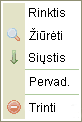

Kontekstinis meniu tai yra eil? mygtuk鑒 (vadinam鑒 "meniu") kurie gali paleisti tam tikras u鱉duotis ar operacijas. Galimi pasirinkimas kei?iasi dinami禳kai, prikalusomai nuoto, koks objektas buvo nuspaustas.
鬚emiau yra meniu, kuriuos atrasite dirbant su standartine CKFinder instaliacija.
Jis atsiranda, kai segtuve paspaud鱉iate Segtuv鑒 skydelyje de禳iniu pel?s klavi禳u:
Jis atsiranda, kai nuspaud鱉iate fail? Fail鑒 skydelyje de禳iniu pel?s klavi禳u:

Jis atsiranda, kai nuspaud鱉iate Fail鑒 skydelyje, bet failo i禳or?je (fone) pel?s de禳iniu klavi禳u: